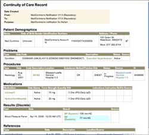
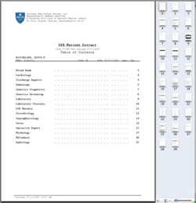
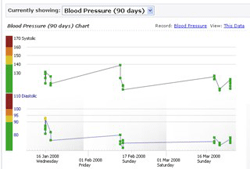
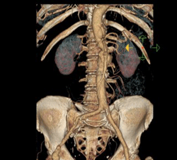
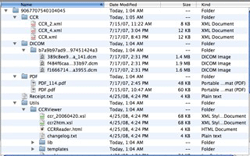

| Supported Import/Export Formats | ||
Continuity of Care Record - CCRThis ANSI-accredited standard is the most widely deployed medical record format. It is the basis of interoperability with Google Health and supported by a wide range of EMR and PHR vendors. MedCommons subscribers can install the full-featured HealthBook CCR editor to enter detailed medical information and to create redacted summaries for social network postings.

Portable Document Format - PDFUniversally accessible using Adobe Acrobat and many other applications, the PDF format is the dominant means of capturing complete, legally binding medical records requests that include narrative diagnostic reports, clinical notes, surgical and procedure summaries as well as nursing notes. Complete medical records are essential for second opinions and for protection from medical errors. PDF documents can be added to a HealthURL account by direct upload from any browser or they can be automatically converted from paper using personalized coded fax cover sheets.

Photographs and Charts - JPEG and PNGPhotos and graphs are supported through the standard formats

Diagnostic Radiology Imaging - DICOMThe DICOM format is used by all modern radiology devices including CT, MRI, Computed and Digital Radiography, Ultrasound and more. DDL, a free and open source software (F/OSS) DICOM utility, is available for download to connect scanners, workstations and picture archiving and communications systems (PACS) bidirectionally to any HealthURL. A plugin to OsiriX, a widely used open source 3D workstation provides additional integration with the HealthURL.

Download all Documents for Portability - ZIPTo avoid lock-in and make it easy to back up your archival records, MedCommons HealthURL accounts and the MedCommons Application for Facebook provide a one-click Download all Documents button that delivers all account documents in open standard format with full fidelity. Documents are delivered as a single ZIP file shown expanded in the below for clarity. |
| © MedCommons Inc. 2009 | |